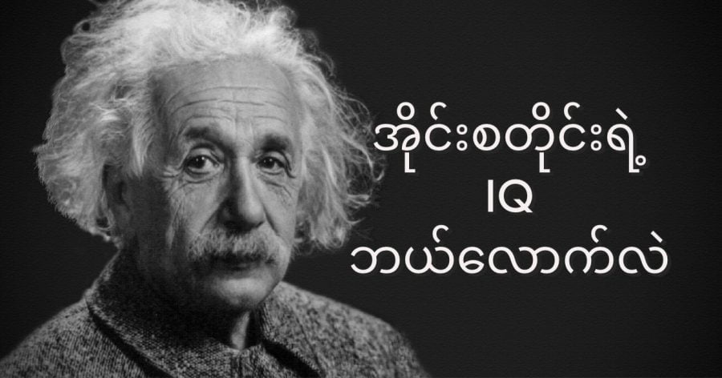

မကြာခန ဆိုသလိုပဲ သတင်းတွေ ထဲမှာ အိုင်းစတိုင်း ထက်တောင် အိုင်ကျူ (IQ) မြင့်တယ် ဆိုတဲ့ ကလေးတွေရဲ့ သတင်းတွေ မကြာခန ကြားကြရပါတယ်။
အိုင်းစတိုင်း ဆိုတာ သိကြတယ် မဟုတ်လား။ ဟို E = mc2 ဆိုတာကြီး ဖော်ထုတ်ခဲ့တာလေ။ ၂၀ ရာစုရဲ့ အတော်ဆုံး သိပ္ပံ ပညာရှင်ကြီးပေါ့။ သူ့ ဖော်ထုတ်ခဲ့တဲ့ ရူပဗေဒ သဘောတရားတွေ သီအိုရီတွေဟာ ၂၀ ရာစုရဲ့ နည်းပညာ တိုးတက်မှုအတွက် အလွန် အရေးပါတဲ့ ကဏ္ဍကနေ ပါဝင်နေတယ် ဆိုတာကို ဘယ်လိုမှ ငြင်းမရပါဘူး။
ဒီလို သတင်းတွေမှာ အိုင်းစတိုင်း ထက်တောင် အိုင်ကျူ မြင့်သေးတယ် ဆိုတဲ့ သတင်းတွေ ကြားရတဲ့ အခါ ပြဿနာက ဘယ်သူမှ အိုင်းစတိုင်းရဲ့ အိုင်ကျူကို မသိကဘူး ဆိုတာပါပဲ။ ပြောရရင်တော့ အိုင်းစတိုင်းကြီး အိုင်ကျူ စာမေးပွဲ ဖြေခဲ့တယ် ဆိုတဲ့ အထောက်အထား မရှိပါဘူး။
အိုင်းစတိုင်း စတင်ပြီး နာမည် ကျော်ကြားလာတဲ့ ၂၀ ရာစု အစောပိုင်း ကာလတွေမှာ အိုင်ကျူ ဉာဏ်ရည် စစ်ဆေး စမ်းသပ်မှု စနစ်က စတင်ပြီး တီထွင်စပဲ ရှိပါသေးတယ်။ အဲ့သည်နောက်ပိုင်း မှာမှသာ အိုင်ကျူ စမ်းသပ်မှုက သေချာ ဖွံ့ဖြိုး လာတာ ဖြစ်ပါတယ်။
ယခုအချိန်မှာ အိုင်ကျူအမှတ် အမြင့်ဆုံး သတ်မှတ်ချက်က ၁၆၀ ဖြစ်ပါတယ်။ အကယ်လို့ သင်သာ အိုင်ကျူရမှတ် ၁၃၅ ကျော်ခဲ့မယ်ဆို သင်ဟာ ကမ္ဘာပေါ်မှာ ရှိနေတဲ့ လူ ၉၉% ထက် ပိုပြီး ဉာဏ်ရည် ကောင်းတယ်လို့ ပြောလို့ ရပါတယ်။
သတင်း ဆောင်းပါး တွေကတော့ အိုင်းစတိုင်းရဲ့ အိုင်ကျူ ကို အမှတ် ၁၆၀ လို့ ခန့်မှန်းကြပါတယ်။ ဒါပေမယ့် ဘယ်သူမှ ဘယ်လိုမျိုး နည်းလမ်း တွေနဲ့ တွက်ချက်ပြီး အိုင်းစတိုင်းရဲ့ အိုကျူကို ခန့်မှန်းကြလဲ ဆိုတာကိုတော့ မပြောနိုင် ကြပါဘူး။
“ဂူဂယ်မှာ ခေါက်ပြီး အိုင်းစတိုင်းရဲ့ အိုင်ကျူဆို ရှာကြည့်ရင် ရလဒ် အမျိုးမျိုးကို ရေးသားထားတဲ့ ဆောင်းပါး အမြောက်အများ တွေ့ရမှာပါ။ ဒါပေမယ့် ကျွန်တော်ကတော့ ဒီ ခန့်မှန်း ရေးသားချက်တွေကို မှန်ကန်မှု ရှိတယ်လို့ မယုံကြည်ပါဘူး” လို့ ကာလီဖိုးနီးယား တက္ကသိုလ် စိတ်ပညာ ဌာနက ဂုဏ်ထူးဆောင် ပါမောက္ခ ဆိုင်မွန်တန် က ပြောပါတယ်။
သူက ဆက်ပြောရာမှာ “အိုင်းစတိုင်းရဲ့ ငယ်စဉ်က ဉာဏ်ရည် ဖွံ့ဖြိုးမှုကို အသေးစိတ် သေခြာ လေ့လာ ကြည့်တော့ သူ့ အိုင်ကျူက သိပ်ပြီး ပျံလန် နေတာမျိုး မဟုတ်လောက်ပါဘူး” လို့ ပြောပါတယ်။
အာကင်ဆော တက္ကသိုလ် ပညာရေး မူဝါဒ နှင့် စိတ်ပညာ ဌာနက လက်ထောက် ပါမောက္ခ ဂျွန်နသန် ဝေ (Jonathan Wai) ကတော့ အိုင်းစတိုင်းရဲ့ အိုင်ကျူဟာ အတော်လေး မြင့်မယ်လို့ ခန့်မှန်းပါတယ်။ သူက ဒီ မှန်းဆချက်ကို အိုင်းစတိုင်းရဲ့ ဖော်ထုတ် တွေ့ရှိခဲ့ မှုတွေနဲ့ တွေးခေါ်မှုတွေကို အခြေခံပြီး ခန့်မှန်း ထားတာပဲ ဖြစ်ပါတယ်။
ပါမောက္ခ ဝေ က အိုင်းစတိုင်း လူငယ် ဆယ်ကျော်သက် ဘဝတုန်းက စဉ်းစားခဲ့တဲ့ အတွေး သုတေသန စမ်းသပ်မှု (Thought Experiment) တစ်ခုကို နမူနာ အနေနဲ့ ထောက်ပြ ပါတယ်။ ဒီ အတွေး သုတေသနမှာ အိုင်းစတိုင်း က အလင်းတန်း ပေါ် တက်စီးရင်း ဘေးက အခြား အလင်းတန်း တခုကို လေ့လာစူးစမ်း နေပုံကို မျက်စေ့ထဲ ပုံဖော်ကြည့်တဲ့ စမ်းသပ်မှု ဖြစ်ပါတယ်။ ဒီ အချိန်က အိုင်းစတိုင်းက အသက် ၁၆ နှစ်ပဲ ရှိပါသေးတယ်။
နောက် အထောက်အထား တခုကတော့ အိုင်းစတိုင်း ကွယ်လွန်ပြီးနောက် သူ့ဦးဏှောက်ကို ၁၉၉၀ ပြည့်နှစ်ဝန်းကျင်မှာ အသေးစိတ် လေ့လာမှု ပြုခဲ့ကြပါတယ်။ ဒီအခါ ဘာတွေ့လဲ ဆိုတော့ အိုင်းစတိုင်းရဲ့ ဦးဏှောက်က သုံဖက်မြင် ရုပ်ကြွ စိတ်ကူးယဉ်မှု ပြုလုပ်တဲ့ အစိတ်အပိုင်းဟာ သာမန် သူတွေထက် ပိုပြီး ကြီးတယ် ဆိုတာပဲ ဖြစ်ပါတယ်။
ပါမောက္ခ ဝေ က အိုင်းစတိုင်း ရွေးချယ်တဲ့ အသက်မွေးဝမ်းကျောင်း Profession ဖြစ်တဲ့ ရူပဗေဒ နယ်ပယ်ကလဲ သူ့ အိုင်ကျူး မြင့်မားတယ် ဆိုတဲ့ အထောက်အထား တစ်ခု ဖြစ်ပါတယ်တဲ့။ ရူပဗေဒလို နယ်ပယ်မှာ ဒေါက်တာဘွဲ့ (PhD) ရတဲ့ သူတွေဟာ အများအားဖြင့် အလွန်မြင့်မားတဲ့ IQ ကို ပိုင်ဆိုင်ထားကြတာကို လေ့လာ တွေ့ရှိ ရပါတယ်လို့ ဆိုပါတယ်။
ဒီလို ရူပဗေဒ ပညာရှင် ကြီးတွေ IQ အလွန်မြင့်ရတာဟာ သူတို့ရဲ့ သင်္ချာစွမ်းရည်၊ ကျိုးကြောင်းဆက်စပ် တွေးခေါ်နိုင် စွမ်းရည်နဲ့ မျက်မြင် ပုံဖေါ် ပြီး ဆက်စပ်တွေးခေါ်နိုင်မှု စွမ်းရည်တွေရဲ့ စုပေါင်းရလဒ် ဖြစ်ပါတယ်။
လက်တွေ့ သုတေသန ပြုချက်တွေအရလဲ ရူပဗေဒ ပညာရှင်တွေဟာ သာမန်သူတွေထက် သိသိသာသာ IQ မြင့်တယ်လို့ ဆိုပါတယ်။ ဒီသုတေသနကို လူသာမန်တွေ အပေါ်မှာ ပြုလုပ်ခဲ့သလို ဉာဏ်ရည် မြင့်မားတဲ့ သူတွေကိုလဲ စုစည်းပြီး သုတေသန ပြုခဲ့ကြတာပါ။ ဒီတော့ လူတယောက်ဟာ ရူပဗေဒ ပညာရှင်ဆိုရင် သူဟာ လူသာမန်တွေထက် IQ မြင့်မယ်လို့ အကြမ်းဖျင်း ခန့်မှန်းလို့ ရပါတယ်။
ဒီအချက်တွေကို ကြည့်ပြီး အိုင်းစတိုင်းရဲ့ အိုင်ကျူ ဟာ အမြင့်ဆုံး ဖြစ်တဲ့ ၁၆၀ ရှိမယ်လို့ ပါမေက္ခ ဝေ က ယုံကြည်ပါတယ်။
အိုင်းစတိုင်းရဲ့ IQ ကသာ ၁၆၀ ဆိုရင် သူဟာ Apple ကုမ္ပဏီကို တည်ထောင်ခဲ့တဲ့ စတိဗ်ဂျော့ (Steve Jobs) နဲ့ အိုင်ကျူ အတူတူ ဖြစ်ပါတယ်။ ဟုတ်ပါတယ်။ Steve Jobs ဟာ IQ 160 တောင် ရှိတဲ့သူလို့ ပါမောက္ခ ဝေ က ခန့်မှန်းပါတယ်။ ဒါကလဲ တခါက Steve Jobs ပြောဖူးတဲ့ စကား တခွန်း အပေါ် အခြေပြု တွက်ချက် ထားတာ ဖြစ်ပါတယ်။
ဂျော့ က သူ ၄ တန်း ကျောင်းသား ဘဝက IQ စမ်းသပ်မှု လုပ်တော့ သူ့ အဆင့်ကို အထက်တန်း ကျောင်းသား အဆင့် IQ ရှိတယ်လို့ သတ်မှတ် ခံရတာ မို့ပါ။
ကွယ်လွန် သွားပြီဖြစ်တဲ့ ပညာရှင် ကြီးတွေ। အထင်ကရ ပုဂ္ဂိုလ် ကြီးတွေရဲ့ IQ ကို ခန့်မှန်း တွက်ချက်ကြတာ အခုမှ အထူးအဆန်းတော့ မဟုတ်ပါဘူး။
၁၉ ၂၆ ခုနှစ်က သုတေသီ ကက်သရင်း ကောက်စ် (Catharine M. Cox) ဟာ သမိုင်းမှာ ထင်ရှား ခဲ့တဲ့ အထင်ကရ လူပုဂ္ဂိုလ် ၃၀၁ ဦးရဲ့ အိုင်ကျူကို တွက်ချက်ပြီး တင်ပြ ခဲ့ပါတယ်။
သူမ တွက်ချက်ခဲ့ သူတွေထဲမှာ နာနည်ကျော် ဗြိတိသျှ စာရေးဆရာကြီး ချားလ်စ် ဒစ်ကင်း। ဂယ်လီလီယို နဲ့ တေးရေး ပညာရှင် ဘီသိုဗန် တို့ ပါဝင်ကြပါတယ်။ ဒီ တွက်ချက်မှု တွေကို သူတို့ရဲ့ စွမ်းဆောင် နိုင်ခဲ့မှု တွေနဲ့ အမူအကျင့် တွေအပေါ် အခြေခံပြီး တွက်ချက်ခဲ့တာ ဖြစ်ပါတယ်။
အချို့ကတော့ အိုင်းစတိုင်းရဲ့ အိုင်ကျူကို တွက်ဖို့ လိုအပ်လို့လားလို့ မေးခွန်း ထုတ်ကြပါတယ်။ ပစ်စ်ဘတ် တက္ကသိုလ် (University of Pittsburgh) က စိတ်ပညာ ဂုဏ်ထူးဆောင် ပါမောက္ခ ရောဘတ် မက်ကော (Robert McCall) ကတော ဒီလို တွက်ချက်မှုကြောင့် ဘာ အကျိုး ကျေးဇူး ရစရာ ရှိလဲဆိုတာ မမြင်ပါဘူး လို့ဆိုပါတယ်။
“နာမည်ကျော် ပုဂ္ဂိုလ်တွေ နာမည် ကျော်ကြားတာဟာ သူတို့ရဲ့ စွမ်းဆောင် ခဲ့မှုတွေကြောင့် ဖြစ်ပါတယ်။ ကျွန်တော်တို့က ဒီ အချက်ကို အသိအမှတ် ပြုဖို့ လိုပါတယ်။ သူတို့ရဲ့ စွမ်းဆောင်ချက်တွေကလဲ သူတို့ရဲ့ IQ အဆင့်နဲ့ သိပ်အများကြီး သက်ဆိုင်မှု ရှိချင်မှ ရှိမှာ ဖြစ်ပါတယ်။ လူတစ်ယောက်ဟာ တော်တယ်၊ ထူးချွန်တယ် ဆိုတာ သူ့ရဲ့ IQ နဲ့ အပြည်အဝ သက်ဆိုင်မှု ရှိချင်မှ ရှိတာပါ” လို့ သူက ထောက်ပြပါတယ်။
Reference: What Was Albert Einstein’s IQ? | Biography
အိုင်းစတိုင်းရဲ့ IQ ဘယ်လောက်ရှိလဲ

October 16, 2021
Other Posts
- အာကာသယာဉ်မှူးတွေ ကမ္ဘာကို ဘယ်လို ပြန်ဆင်းလဲ
- နေအဖွဲ့အစည်း
- အီဂျစ်မံမီ ၃ ခု၏ မျက်နှာအား DNA မှတဆင့် ပြန်ပုံဖေါ်
- စိတ်ဖြင့် ထိန်းချုပ်ပြီး အောက်ပိုင်းသေသူ လမ်းလျှောက်နိုင်စေသောစက် တီထွင်အောင်မြင်
- မစ်ကီးဝေးရဲ့ ဗဟိုက ထူးဆန်းတဲ့ ရေဒီယို အချက်ပြလှိုင်းများ
- သော့ပေါက်က လေဆာထိုးပြီး အခန်းတွင်းကို ထောက်လှမ်းနိုင်မယ့်နည်းပညာ
- ၂၀၂၇ မှာ ဖွင့်မယ်ဆိုတဲ့ ကမ္ဘာ့ ပထမဆုံး အာကာသ ဟိုတယ်
- ချင်ပန်ဇီ မျောက်တွေရဲ့ ဘာသာစကား ရှာဖွေတွေ့ရှိ
- ဂျိမ်းစ်ဝက်ဘ် ၏ အနီအောက်ရောင်ခြည် ကင်မရာ တစ်လုံးနှင့် အဆက်အသွယ် ပြတ်တောက်သွား
- မှိုတွေမှာ ဘာသာစကား ရှိကြောင်း သိပ္ပံ ပညာရှင်များ ရှာဖွေတွေ့ရှိ